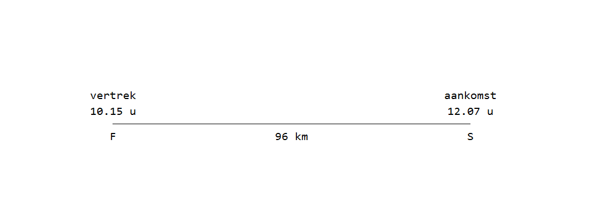

Vraag

Shamir vertrok uit F met een gemiddelde snelheid van 80 km/u naar S.
Onderweg rustte hij even uit.
Hoe lang heeft hij uitgerust?
A: 32 minuten
B: 40 minuten
C: 62 minuten
D: 80 minuten
Achtergrond Informatie
Snelheid wordt vaak uitgedrukt in km/u (kilometer per uur).
Een snelheid van 80 km/u betekent dat Shamir in één uur 80 kilometer aflegt.
De meest belangrijke formule voor dit soort somen is de volgende:
Tijd = Afstand : Snelheid
Bijvoorbeeld, je rijdt in een auto met een snelheid van 80 km/u
en je wilt weten hoe lang het duurt om 120 km rijden.
afstand = 120 km
snelheid = 80 km/u
Dus de tijd is 120 : 80 = 1.5 uur
Verder moet je weten dat een uur bestaat uit 60 minuten.
Bijvoorbeeld, 1.5 uur is 1 uur en 30 (0.5 x 60) minuten.
Oplossing
De vraag is: hoe lang heeft Shamir uitgerust onderweg van F naar S?
Stap 1: Bereken hoe lang hij onderweg zou zijn als hij geen pauze had genomen.
We gebruiken de formule tijd = afstand : snelheid.
Afstand = 96 km
Snelheid = 80 km/u
Tijd = 96 : 80
\[\frac{96}{80}=\frac{48}{40}=\frac{12}{10}=\frac{6}{5}=1\frac15\]
1\(\frac15\) uur is gelijk aan 1 uur en 12 (60 : 5) minuten. Shamir zou zonder pauze dus 1 uur en 12 minuten onderweg zijn.
Stap 2: Bereken hoe lang Shamir werkelijk onderweg was.
Shamir vertrok om 10.15 en kwam aan om 12.07 bij punt S.
Van 10:15 tot 12:00 is precies 1 uur en 45 minuten.
Van 12:00 tot 12:07 is precies 7 minuten.
Hij is dus on totaal 1 uur en 52 (45 + 7) minuten onderweg geweest.
Stap 2: Bereken het verschil tussen de twee tijden.
In stap 1 hebben we berekend dat Shamir zonder pauze 1 uur en 12 minuten onderweg zou zijn. In stap 2 hebben we berekend dat Shamir in de werkelijkheid 1 uur en 52 minuten onderweg is geweest. Hij heeft er dus 40 minuten langer over gedaan dan noidg. Dat betekent dat hij een pauze heeft genomen van precies 40 minuten. Het juiste antwoord is dus B.